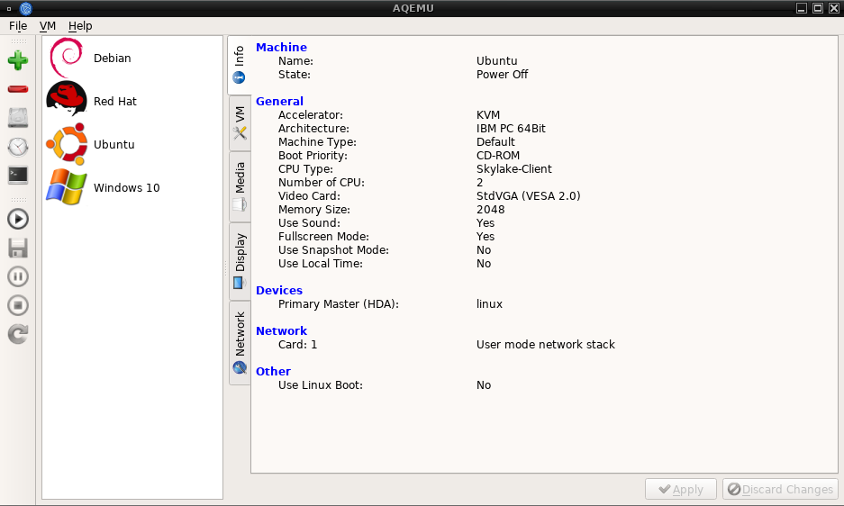

Introduction
Aqemu is a free and opensource GUI management for qemu, offering a simple and effecient way to create and use one or more virtual system. The interface use QT5 framework and can be installed on most of the Linux system or be build from the sources.
Technical specification
Developement language : c++
Operating Systems : Linux/Unix
Stable version : 0.9.2
License : GNU/GPL v2
Official website : https://github.com/tobimensch/aqemu

Creation of a basic virtual system
The following aim to explain the creation of a basic virtual system for a Linux distribution, using a iso image install and KVM as accelerator. It show step by step how to perform it and was made on a new aqemu install
Start aqemu by running the command system aqemu in a terminal or eventually, by clicking on his icon in your Window Manager
Confirm the creation of the new folder by clicking on "Yes". You will now see the main display of Aqemu
Run the First start wizard to provide the basic settings. This is available in the menu : File > First start wizard. The default path will be set to your /home/username/.aqemu
You will need to provide to aqemu, the path binary of qemu, using the automatic search function will work out of the box. By default, the qemu x86_64 is selected
That's all for the basic settings wizard, click on next.

We will now create our first virtual system, to start the process, click on the icon . Select Typical option is the default choice and will work in most of the case
You will need to select the right template according to the operating system that will be installed in this virtual system, for a recent Linux distribution, Linux 2.6 x86_64 is the one you want to select. You can of course install other OS as Windows, Mac'OS system, FreeBSD, just look at the drop list for the right template.
You have to select the accelerator extensions of qemu, KVM is the default choice
Set the name of your virtual system, at your convenience.
Define the virtual hard drive space you want to allocate for this virtual machine, default is 20 GO

The settings of the network connection is limited to the "slirp" or User mode in the creation process, multiples other possibility of configuration as TAP, bridged connection, socket... can be defined later one.
The virtual machine is now created, click to finish to go back in the main display.
A new entry should now be displayed with the name of your virtual machine newly created, the first tab info will display the general settings of the virtual machine.
The tab VM contain several options related to the hardware, you can increase the number of CPU's, ram to use in your virtual machine or choice the boot priority, the keyboard maps...
The tab media is for the devices, images and other settings related to the boot of the VM. In order to boot in a ISO image, click on the disk icon in "Add devices"
The tab network will offer several options on how to configure the network connection of the virtual system.
Now we have set the basic settings of our virtual system, to start it, click to A new window will now be available showing the boot phase process.
(ArchLinux xfce4)